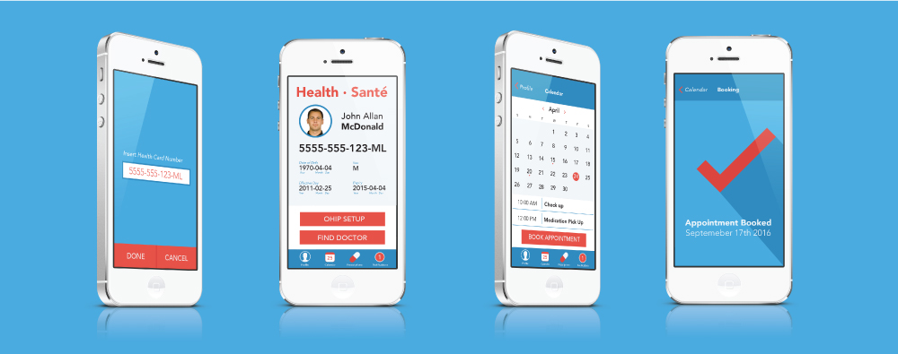
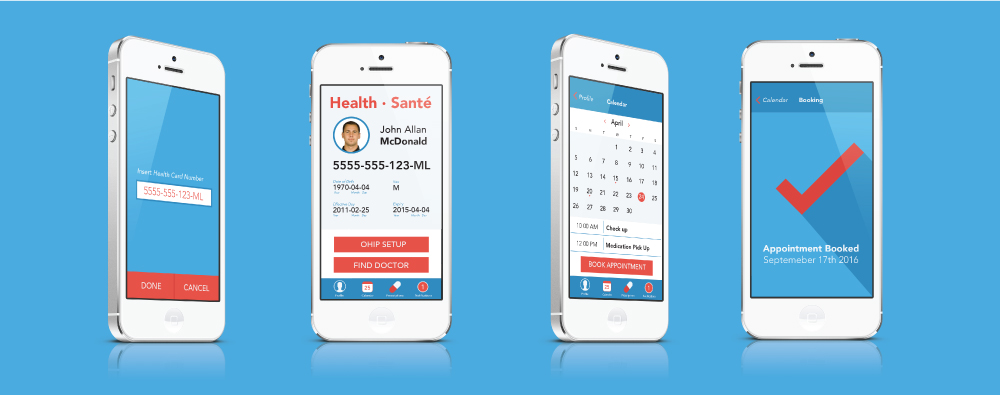

Kilter
Kilter is a mobile app that connects patients with their health care providers. Simply enter in health card number for Kilter to auto fill your information on your profile to create a digital OHIP card. Your profile on your Kilter account displaying your health card can be used at appointments and picking up prescriptions. Connecting with your health providers data base you are able to book appointments directly from the Kilter calendar. After your appointment your doctor is able to send your prescription to your phone to document and send to your local pharmacy.
 
